Generic web repository connector

| Release | Resolved | Community Contributions |
| 0.9.0 Nov 12 |
86 reports |
Eugene Kuleshov contributed UI streamlining for the generic web repository connector. Willian Mitsuda provided several UI improvements. Meghan Allen and Jochen Hiller also contributed patches. |
| 0.8.0 Oct 21 |
62 reports |
Eike Stepper contributed configurable commit templates. Willian Mitsuda provided several improvements for Task List layout and progress bar presentation. Raphael Ackermann provided numerous interaction improvements for task and category creation. |
| 0.7.0 Sep 29 |
92 reports |
Eugene Kuleshov streamlined adding new repositories, improved the generic web connector, and JIRA query dialog. Willian Mitsuda provided several layout UI layout and presentation improvements. Yuri V. Baburov improved task activity timing. John Anvik and Nathan Hapke also contributed patches and tests. |
| 0.6.2 Aug 25 |
125 reports |
Steffen Pingel provided numerous patches to the tasks framework and improvements to the Trac connector, and has been voted in as a committer. Jeff Pound improved attachment handling and spell checking. Eugene Kuleshov contributed web connector support for Google's new code hosting service. Willian Mitsuda contributed the open task dialogs. Felix Schwarz contributed patches improving the usability of connector selection. Izzet Safer and Nathan Hapke also contributed a number of patches and tests. |
| 0.6.1 July 31 |
126 reports |
Steffen Pingel contributed Trac support as well as numerous patches to the Tasks framework. Jeff Pound contributed duplicate detection, Error Log bug reporting and streamlined context attachments. Eugene Kuleshov improved the JIRA query dialog and provided numerous patches for the sandbox web repository connector. Willian Mitsuda provided a patches for Tasks UI streamlining. Brian de Alwis, Brock Janiczak, Izzet Safer and Nathan Hapke also contributed useful patches and tests. |
Also: New & Noteworthy for: Mylar 0.5, Mylar 0.4, Mylar 0.3
Update notes:
Next release
|
Generic web repository connector |
The generic web repository connector has moved out of the sandbox
and is now part of the Mylar install.
Refer to the
FAQ for instructions on setting up queries to repositories that
are not currently supported by a rich connector (e.g. IssueZilla,
GForge, SourceForge, phpBB, VBulletin, Google Code and Mantis).
The parameter list visible below is used for configuring project
properties for projects that require them. These properties
are typically derived from the query URL used to access the
repository. Matching rules can be edited under the Advanced
Configuration section
on both the repository settings page and the edit query page.
|
|
|
|
|
Progress for categories |
Categories now show progress for the number of completed tasks.
The weekly progress indicates progress in terms of estimated time
(by default tasks have an estimate of 1 hour), and the tooltip will
indicate progress in terms of both estimated time and number of
tasks completed. 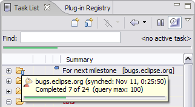 |
|
|
|
|
Editing and open changes |
The Open action on the context menu for repository queries
has been replaced by Properties for the purpose of
consistency with Eclipse. The Task List now respects the workbench single vs. double-click open policy, set in Preferences -> General -> Open Mode. If the Preferences -> Mylar -> Task List -> Activate on double-click is enabled along with single click in the workbench, single click can be used to open tasks, and double-click to activate them. |
|
|
|
|
Commit Template Configuration |
The template used for automatically creating the commit message from
the corresponding task are now
configurable. Use Ctrl+Space to invoke content assist for
choosing commit template variables. Note that the template format
will be used to determine the task when the Open Corresponding
Task action is used
on incoming change sets and commit messages. 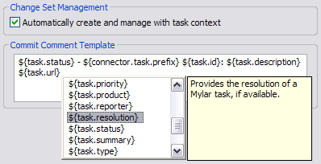 |
|
|
|
|
Weekly Progress |
When in Focus on Workweek mode (right-most toolbar button),
the Task List will show a JUnit-style progress bar which
indicates how many of the tasks scheduled for the current week have
been completed. Completing a task or deferring to a future
week will cause the progress bar to move forward. The tooltip
for the progress bar will indicate the total.
|
|
|
|
|
Editor Integration Improvements |
Task editors are now restored on workbench start and present in the
editor history. 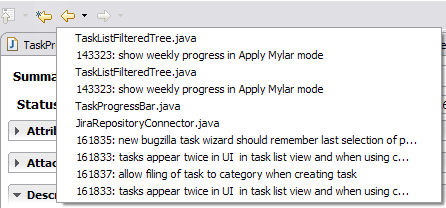 |
|
|
|
|
Incoming Changes |
All comments added since your last reading of a repository task will
be automatically expanded when a task with incoming changes is
opened. Incoming changes are retrieved with the background
synchronization to avoid waiting for the server when opening.
Note that a
background synchronization is still kicked off upon opening in case
changes came in since the last scheduled synchronization.
Repository tasks can now be
explicitly marked as read or unread.
|
|
|
|
|
Task Editor Improvements |
The layout of the repository task editor is continuing to improve.
The most notable change with 0.7.0 is that attributes related to
people are now next to Actions section in order to make it easier to
see who will be notified of the changes. 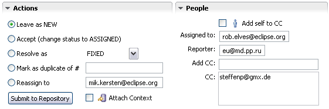 |
|
|
|
|
Task Repository Integration |
Task repositories are easier to add, validate, and can be named via
the Task Repositories view. An icon decorated indicates
the repository type. A task repository can be associated with
a project, enabling it to be used for actions such as resolving bug
hyperlinks. Note that you do not need to associate all of your
projects with repositories after updating, since you will be
prompted to do this if when the associate is needed.
|
|
|
|
|
Spell Checking |
Spell checking is supported in the task editor for local tasks and
for connectors that support rich editing (e.g. Bugzilla, Trac).
Please see the FAQ for how to turn on this preference:
http://wiki.eclipse.org/index.php/Mylar_FAQ#Spell_Checking 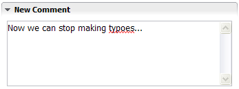 |
|
|
|
|
Open/Active Task dialogs |
An Open Type style dialog is available for opening tasks
(Ctrl+Shift+F11) and for activating tasks (Ctrl+Shift+F12).
The list is initially populated by recently active tasks. The
active task can also be deactivated via Ctrl+Shift+F9. This
can be used as a keyboard only alternative for multi-tasking
without the Task List view visible. These
actions appear in the Navigate menu. 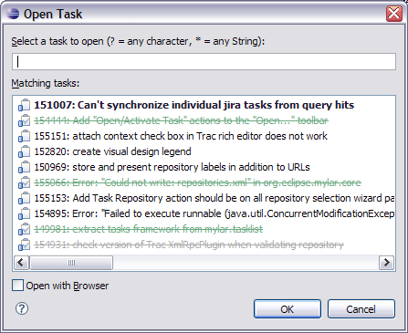 |
|
|
|
|
Attachment Improvements |
Repository task attachments (supported by the Bugzilla and Trac
connectors) can now be attached via drag-and-drop from both within
the Eclipse workspace and from outside, and from text selections,
which will invoke the attachment wizard. Attachment can be opened
with a browser or corresponding editor.
|
|
|
|
|
Task List Restore |
Task and context data can be restored from a backup snapshot via
File -> Import -> Mylar Task Data. By default backup
snapshots are taken daily and kept for 30 days.
|
|
|
|
|
Report Bugs from Error Log |
Bugs can created directly from events in the
Error Log view.
This will create a new repository task editor with the summary and
description populated with the error event's details. If
the Connector you are using does not have a rich editor, the event
details will be placed into the clipboard so that you can paste them
into the web-based editor that will be opened automatically.
|
|
|
|
|
Automatic Duplicate Detection |
The Search for Duplicates button on the New Repository
Task editor encourages and facilitates finding similar bug
reports before creating a new one. Potential duplicates are displayed in
the Search view which can be used to open a bug and comment
or vote if a duplicate is found. The current duplicate
detection mechanism uses stack traces, either automatically inserted
by the Report as Bug mechanism, or manually pasted into the
Description area. All descriptions and comments of bugs
on the corresponding repository are included in the search. 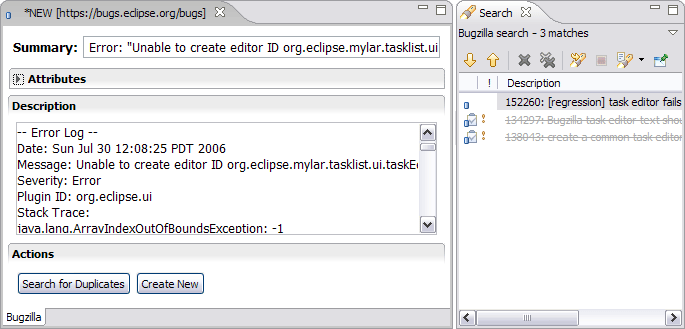 |
|
|
|
|
Task Editor Improvements |
All hyperlinks (URLs, bug/task references, Java stack traces) now
work in the New Comment and Notes editors. Note
that hyperlinks need to be hovered over in order to get underlined.
Multiple undo/redo and other editor shortcuts now work, and
editing actions are integrated into the context menu. When
submitting comments, contexts can be more easily attached by selecting the corresponding check-box in the Actions
section.
|
|
Hierarchical Layout in Package Explorer |
The long-standing limitation of not being able to use the Package
Explorer in hierarchical mode has been resolved for Eclipse 3.2.1
and later (3.3M1 and the upcoming 3.2.1 release). 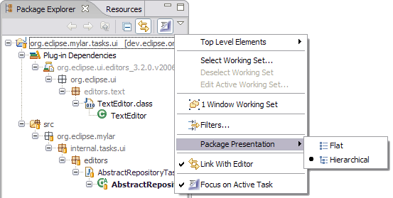 |
|
|
|
|
Apply Mylar to Debug view |
Mylar can now be applied to the Debug view, making the thread
tree focusing on the task context by hiding uninteresting stack
frames. 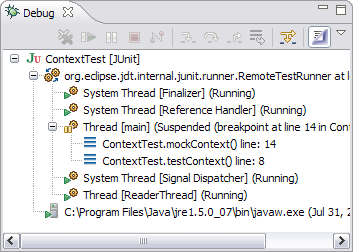 |
|
|
|
|
Auto Apply Mylar on Navigator Views |
For navigator views (Package Explorer, Project Explorer
and Navigator) the Apply Mylar button can be set to automatically toggle on
with task activation and off with task deactivation.
Note that the context-related preferences including this one are now in
Preferences -> Mylar -> Context. 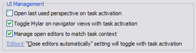 |
|
Https Authentication |
Http Authentication credentials can now be set for Bugzilla servers. 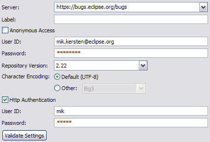 |
|
|
|
|
Votes and Links |
Additional attributes that do not have rich editor components
(votes, bug activity log) are now linked to remove the need to
manually check the Browser tab. Bug dependencies can be
navigated with hyperlinks, and the tooltips for linked bugs are the
bug descriptions. 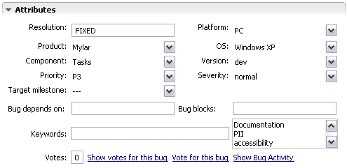 |
|
|
|
|
New Task Editor |
A rich editor for creating new Trac tasks is now available for
repositories that use XML-RPC (see the
FAQ for XML-RPC configuration instructions).
|
|
|
|
|
Rich Editor, Attachments and Offline support |
The Trac connector now supports the rich task editor. As with
the Bugzilla editor, this means that attributes and comments can be
for viewed and edited offline, synchronization is done in the
background, and attachments can be posted and retrieved. Task
Context attachments are supported via the context menu actions in
the Task List. This support requires the Trac XML-RPC plug-in
to be enabled and the integration will fall back to the web mode if
it is not, see:
http://wiki.eclipse.org/index.php/Mylar_FAQ#Trac_Connector_troubleshooting
|
|
|
|
|
Search Integration |
Trac search is now integrated with the generic Task search facility. 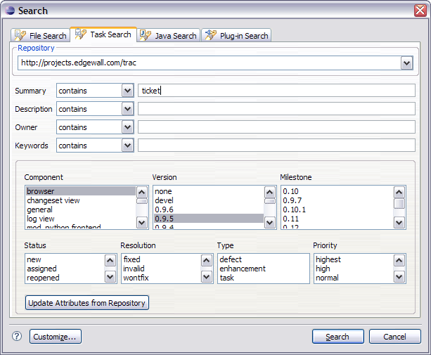 |
|
|
|
|
Query Integration |
The new connector for the open source
Trac issue tracking system
integrates Trac queries into the Task List. If you do not know your
Trac repository version use the Automatic setting and click
Validate Settings. 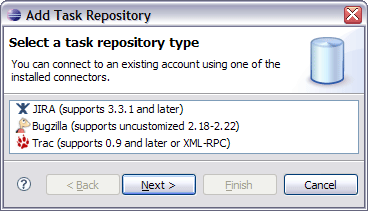 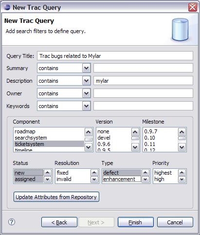 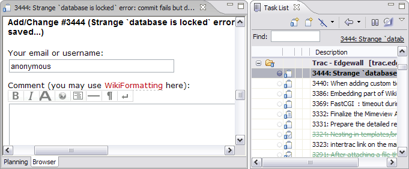 |
|
Rich Editor and offline editing |
The JIRA connector now provides a rich editor, offline editing, and
change notifications. 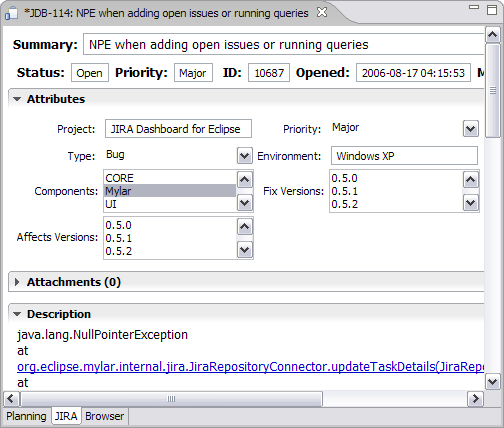 |
|
|
|
|
Search integration |
Searching through JIRA repositories is now integrated with the
Search dialog.
|
|
|
|
|
Improved JIRA Query Dialog |
The JIRA query dialog has been streamlined into a single page.
Date range queries are now supported.
|